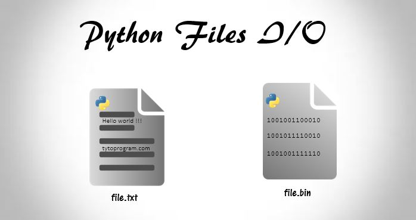
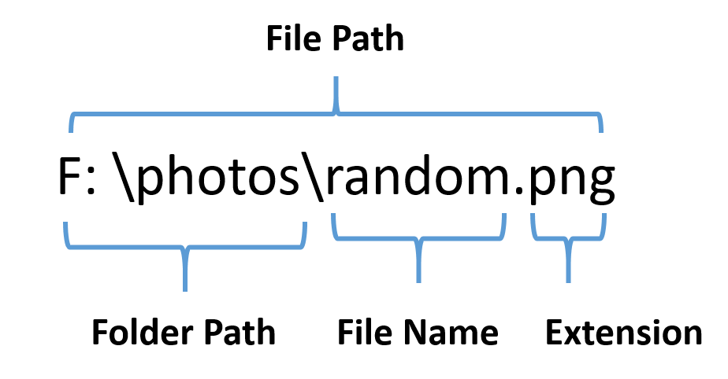
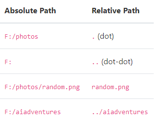
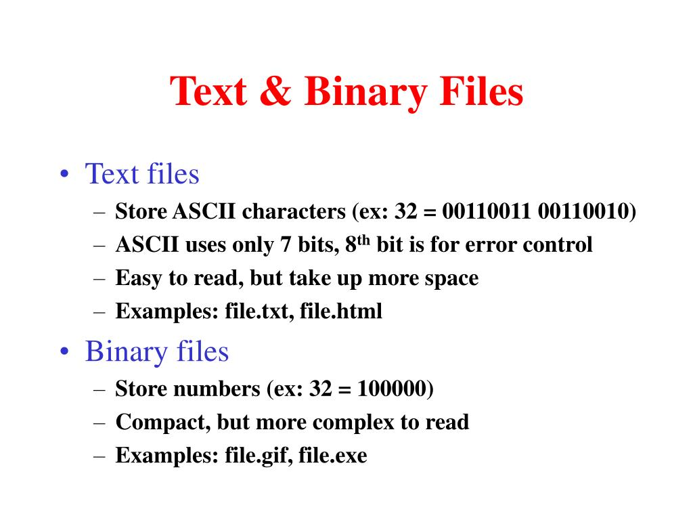
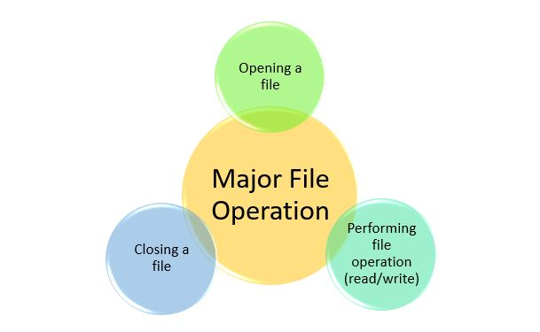

File Handling#
Python Variables are good to store data while your program is running, but if you want your data to persist even after your program has finished, you need to save it to a file. You can think of a file’s contents as a single string value. In this chapter, you will learn how to use Python to create, read, and save files on the hard drive.
Before we can work with files, we need to learn what file paths are. So, lets dive in …

File Paths#
Every file in your computer is stored in a particular location. Lets say, you save all your photos in F:drive inside photos folder. This is the location where you will find all your photos. This is how you organise your files and remember the locations.
The file path is a string that specifies the location of a file on the computer. It has three major parts:
Folder Path: the file folder location on the file system where subsequent folders are separated by a forward slash (in Unix) or backslash (in Windows)
File Name: the actual name of the file
Extension: the end of the file path pre-pended with a period ( . ) used to indicate the file type.
For example, you have a photo called ‘random.png’ in the path F:\photos

The Current Working Directory#
Every program that runs on your computer has a current working directory, or cwd. Any filenames or paths that do not begin with the root folder are assumed to be under the current working directory. You can get the current working directory as a string value with the os.getcwd() function.
Note
You see two backslashs instead of one, because one is used an escape character and the other is the actual separator. You can read more about escape characters https://www.w3schools.com/python/gloss_python_escape_characters.asp
You can change the current working directory with os.chdir().
Relative Path and Absolute Path :**#
1 . Relative Path#
A relative path is a path that is relative to the current working directory. In other words, it specifies the location of a file or directory relative to the current directory. Relative paths are often used when referring to files or directories within the same project or directory structure. Here’s an example of a relative file path:
./data/myfile.txt
This path specifies that the file myfile.txt is located in a subdirectory called data that is located in the current working directory. The “ . “ in the path represents the current working directory.
2 . Absolute Paths#
An absolute path is a path that specifies the exact location of a file or directory on the file system. Absolute paths are often used when referring to files or directories outside of the current directory structure. Here’s an example of an absolute file path:
/home/user/documents/myfile.txt
This path specifies that the file myfile.txt is located in the documents directory, which is located in the user directory, which is located in the home directory. The path starts from the root directory “ / “.

Types of Files#
There are two types of files: binary and text files.
Binary files are files that contain data in a format that is not human-readable.
Text files, on the other hand, contain data that is human-readable, such as plain text or data in a structured format like CSV or JSON.

File Methods / Operations#

1 . open() function#
To open a file with the open() function, you pass it a string path indicating the path of the file you want to open; it can be either an absolute or relative path. The open() function returns a File object.
Before we can read a file, we will have to create it.
Check your current working directory (cwd).
Create a new text file named sample.txt in your current working directory.
Open sample.txt and write some random text in it.
Save the changes and close the file.
Lets try to open sample.txt. The file path can be written as sample.txt.
{note} The path might be different, if you have created the file in some other directory.
f = open('/content/sample.txt')
The above command will open the file in read mode. When a file is opened in read mode, Python lets you only read data from the file; you can’t write or modify it in any way. Read mode is the default mode for files you open in Python.
The call to open() returns a File object / File descriptor. A File object represents a file on your computer; it is simply another type of value in Python, much like the lists and dictionaries you’re already familiar with. File object can be thought of as a “read/write pointer” and you can also perform operations like moving the “read/write pointer”, which determines where in the file data is read from and where it is written to.
In the previous example, we stored the File object in the variable f. Now, whenever you want to interact with the file, you can do so by calling methods on the File object in variable f.
read() function#
If you want to read the entire contents of a file as a string value, use the File object’s read() method.
text = f.read()
text
"India has emerged as a major hub for IT companies, with a booming technology industry that has made significant contributions to the global IT sector. The country is home to a large number of IT companies, including some of the world's largest and most successful firms.\nSome of the biggest IT companies in India include Tata Consultancy Services (TCS), Infosys, Wipro, HCL Technologies, and Tech Mahindra. These companies have a global presence, with offices and clients all over the world."
close() function#
f.close()
{note}
It’s important to remember that it’s your responsibility to close the file. You can close your file by calling **close()** method of the file object. Not closing the file can have unintended effects.
Instead of read() you can use the readlines() method to get a list of string values from the file, one string for each line of text.
f = open('sample.txt')
lines = f.readlines()
print(lines)
f.close()
["India has emerged as a major hub for IT companies, with a booming technology industry that has made significant contributions to the global IT sector. The country is home to a large number of IT companies, including some of the world's largest and most successful firms.\n", 'Some of the biggest IT companies in India include Tata Consultancy Services (TCS), Infosys, Wipro, HCL Technologies, and Tech Mahindra. These companies have a global presence, with offices and clients all over the world.']
{note}
Except for the last line of the file, each of the string values ends with a newline character **\n**.
write() function#
Python allows you to write content to a file in a way similar to how the print() function writes strings to the screen. You can’t write to a file you’ve opened in read mode, though. Instead, you need to open it in write mode and append mode.
Write mode will overwrite the existing file and start from scratch, just like when you overwrite a variable’s value with a new value. Pass ** ‘w’ ** as the second argument to open() to open the file in write mode.
Append mode, on the other hand, will append text to the end of the existing file. You can think of this as appending to a list in a variable, rather than overwriting the variable altogether. Pass ‘a’ as the second argument to open() to open the file in append mode.
If the filename passed to open() does not exist, both write and append mode will create a new, blank file. After reading or writing a file, call the close() method before opening the file again.
fw = open('sample2.txt', 'w') # write mode
fw.write('This is written by python.')
fw.close()
fw = open('sample2.txt', 'a') # append mode
fw.write('This is an appended text')
fw.close()
f = open('sample2.txt') # reading mode
text = f.read()
f.close()
text
'This is written by python.This is an appended text'
File Position#
In Python, file position refers to the current position of the pointer within a file. This pointer is used to indicate the current read or write location within a file.
You can get the current file position using the tell() method of a file object. The tell() method returns an integer that represents the current position of the file pointer.
Here’s an example:
# Open a file for reading
file = open("sample.txt", "r")
# Get the current position of the file pointer
position = file.tell()
print("Current position:", position)
# Close the file
file.close()
Current position: 0
In the above example, the tell() method is used to get the current position of the file pointer. The position is then printed to the console.
You can also set the file position using the seek() method of a file object. The seek() method takes two arguments: offset and whence.
The offset argument specifies the number of bytes to move the file pointer, and the whence argument specifies the reference point from which to move the pointer. The whence argument can take one of three values:
0: move the file pointer relative to the beginning of the file
1: move the file pointer relative to the current position
2: move the file pointer relative to the end of the file
Here’s an example:
# Open a file for reading
file = open("sample.txt", "r")
# Move the file pointer to the beginning of the file
file.seek(0, 0)
# Read the first line of the file
line = file.readline()
# Print the line to the console
print(line)
# Close the file
file.close()
India has emerged as a major hub for IT companies, with a booming technology industry that has made significant contributions to the global IT sector. The country is home to a large number of IT companies, including some of the world's largest and most successful firms.
In the above example, the seek() method is used to move the file pointer to the beginning of the file. The readline() method is then used to read the first line of the file. The line is printed to the console, and then the file is closed.
Practice problems#
Q. Write a function display_words() in python to read lines from a text file "story.txt", and display unique words, which are less than 4 characters. Keep in mind “the” and “The” are two different values.
The content of the file is given below.
"India is the fastest-growing economy. India is looking for more investments around the globe. The whole world is looking at India as a great market. Most of the Indians can foresee the heights that India is capable of reaching."
For Example:-
def display_words(file): ### your code here
file = your/path/to/story.txt
display_words(file1)
[‘the’, ‘for’, ‘The’, ‘as’, ‘at’, ‘is’, ‘can’, ‘a’, ‘of’]
## your code ##
Q. Aditi has used a text editing software to type some text. After saving the article as words.txt, she realised that she has wrongly typed alphabet J in place of alphabet I everywhere in the article.
Your task is to write a function named as JTOI() such that it would display the corrected version of entire content of the file words.txt with all the alphabets “J” to be displayed as an alphabet “I” on screen.
Note: Assuming that words.txt contains wrongly typed J alphabet otherwise.
Example:
If Aditi has stored the following content in the file WORDS.TXT:
“WELL, THJS JS A WORD BY JTSELF. YOU COULD STRETCH THJS TO BE A SENTENCE.”
The function JTOI() should display the following content:
“WELL, THIS IS A WORD BY ITSELF. YOU COULD STRETCH THIS TO BE A SENTENCE.”
## your code ##
Q. Write a program to read first 10 characters from the file and display it from giving text.
"India is the fastest-growing economy. India is looking for more investments around the globe. The whole world is looking at India as a great market. Most of the Indians can foresee the heights that India is capable of reaching."
## your code ##
Q. Write a program that counts the number of tabs and new line characters in a file.
Text to create file :
“India is a diverse country that offers a wide range of tourism experiences. From the snow-capped mountains of the Himalayas in the north to the beaches of Goa and Kerala in the south, there’s something for everyone.
Some of the top tourist attractions in India include:
- The Taj Mahal in Agra, one of the Seven Wonders of the World
- The historic forts and palaces of Rajasthan, such as the Amber Fort in Jaipur and the Mehrangarh Fort in Jodhpur
- The backwaters of Kerala, where you can take a houseboat ride and enjoy the serene beauty of the region
- The hill stations of the Himalayas, such as Shimla, Darjeeling, and Manali, which offer a respite from the heat of the plains
- The bustling cities of Delhi, Mumbai, and Kolkata, which offer a glimpse into modern India
India is also known for its rich cultural heritage, which can be seen in its art, music, dance, and cuisine. Whether you’re interested in history, nature, or culture, India has something to offer every type of traveler.”
## your code ##